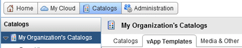
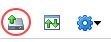
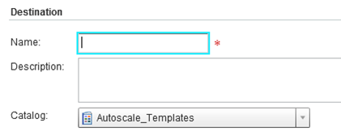
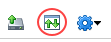
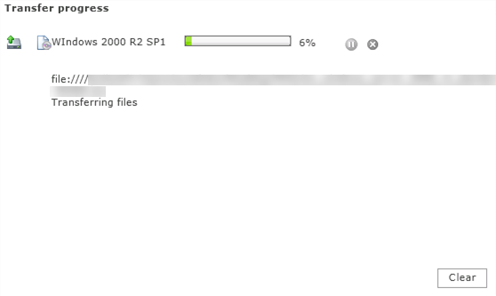

How to upload ISO or FLP media
Overview
You may find you need to upload ISO (DVD/CD) or FLP (floppy disk) media to vCloud that have already been provided by UKCloud. These media can then:
Be consumed by users within your organisation
Facilitate the creation of VMs from scratch, which can then be saved to your catalog for future deployment
Uploading media
To upload media to the catalog:
In vCloud Director, select the Catalogs tab.

Select the Media & Other tab.
Click the Upload icon.

In the Upload Media & Other dialog box you can:
Paste in a URL for the ISO or FLP media
Browse to the ISO or FLP file on your local device and select it (for this to work, you need to have Java JRE available on your device)

You can give the media a name and then choose which catalog to put it in.

When you're done, click Upload.
During the upload, you'll see a status window. You can carry on with other work while the upload takes place.
You can close (and reopen) the window by clicking the View uploads and downloads icon.

This opens the Transfer process dialog box.

Feedback
If you find an issue with this article, click Improve this Doc to suggest a change. If you have an idea for how we could improve any of our services, visit UKCloud Ideas. Alternatively, you can contact us at products@ukcloud.com.